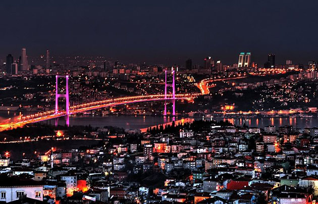

Tarihi Mekanlar
- Alman Çeşmesi
- Beylerbeyi Sarayı
- Eyüp Sultan Cami
- Kız Kulesi
- Galata Kulesi
Kültür Sanat Etkinlikleri
İstanbul giderek kültürel açıdan daha önemli bir merkez hâline gelmektedir. Şehir, 2010 Avrupa Kültür Başkenti ilan edilmiştir Dünyaca ünlü pop starlar İstanbul stadyumlarını doldururken, opera, bale ve tiyatro gibi sanat dallarında eserler yıl boyu sahnelenir. Mevsimsel FESTİVAL boyunca, dünyaca ünlü orkestralar, koral müzik grupları ve caz müziğinin efsane isimleri konser vermektedirler. 1982 yılından beri düzenlenmekte olan Uluslararası İstanbul Film Festivali, Avrupa'daki en önemli FİLM festivallerinden birisidir. Güzel sanatlarla ilgili olarak 2 yılda İstanbul Bienali düzenlenmektedir. 2004 yılında açılan İstanbul Modern Sanat Müzesi sık sık Türk ve yabancı sanatçıların sergilerine ev sahipliği yapmaktadır. Ayrıca Pera Müzesi ve Sakıp Sabancı Müzesi'de dünyanın ünlü sanatçılarının sergilerini barındıran kentin önemli müzelerindendir.[243][244] Haliç'in kıyısında kurulan Rahmi M. Koç Müzesi'nde genellikle sanayi, ulaşım, endüstri ve iletişim tarihine ait 1800 ve 1900'lü yılların araba, lokomotif, tekne, denizaltı ve uçakları sergilenmektedir.
